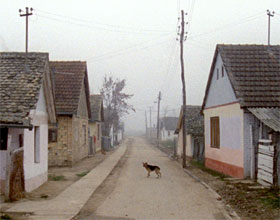

Karpopotnik – Karpotrotter

Matjaž Ivanišin – Slovenia 2013 – 49 min.
Sc: Matjaž Ivanišin, Nebojša Pop-Tasic – DOP: Marko Brdar – E: Uja Irgolic – P: Studio Legen
16mm – Slovenian
German Premiere
It was about 1970, at the peak of the Yugoslavian „Black Wave“ when the young filmmaker Karpo Godina decided to travel with his camera through the flat hinterland of Vojvodina. As village was linked to village, an unusual road movie emerged. The multi-ethnic character of the region was translated into a wide variety of faces, languages and customs. The title: IMAM JEDNU KUCU (I HAVE A HOUSE).
Unfortunately, as time passed, only a few fragments of this original film were preserved. Forty years later, another filmmaker embarks on the same journey with his camera through this flat landscape in the footsteps of the young Karpo Godina. With fragments of the original material, using Super-8 and suitable folk music, a film in dreams emerges. This makes KARPOTROTTER into a more than successful homage to an idiosyncratic director. A film about Karpo Godina, without Karpo Godina. – IFF Rotterdam
Wednesday 15/10 6.30 p.m. Werkstattkino – Guest: Matjaž Ivanišin
Matjaž Ivanišin, born in 1981 in Maribor, Slovenia. Studied film and television directing at AGRFT, Ljubljana.
Films (selection): Che Sara 2002 – My Little Sweethearts 2005 – Šentilj - Spielfeld, a Border Crossing that once was 2009 – A House on Jurčkova street 2011 – Karpotrotter 2013